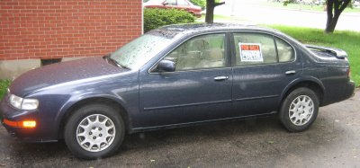
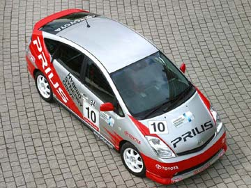
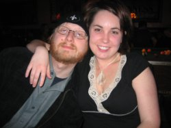
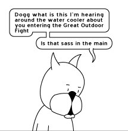

Kelly, Chris Gerstle and I went down to Thunder Over Louisville last weekend to see the sights and check out some of the 800,000 other folks. I snapped some photos, and you can see them here: 2006.04.22 – Thunder Over Louisville.
¨
| This is the blog of a one Ben Wilson, a Louisville, Kentucky native who enjoys baseball, beer, music, bikes, things that fly and good food. By day he pushes pixels and makes the Internet happen for a local advertising agency. His wife, Kelly is an Ironman, and his baby Amelia is the cutest thing ever. |
Kelly, Chris Gerstle and I went down to Thunder Over Louisville last weekend to see the sights and check out some of the 800,000 other folks. I snapped some photos, and you can see them here: 2006.04.22 – Thunder Over Louisville.

Now that Kelly and I have ordered a Toyota Prius, it’s time to sell my beloved 1997 Nissan Maxima. That car has been a good friend to me over the years, but it’s time to move on.
I’ve posted a listing on the Louisville Craigslist, and you can check it out here: 1997 Nissan Maxima, 98k miles.

Kelly and I, for a while now, have been enamored with the Toyota Prius, a gas/electric hybrid that gets roughly 50 miles to the gallon. It’s surprisingly roomy and the drive is nice, and it’s a Toyota, so it has a good safety and service track record. Also, it’s got wicked technical props as well – like the fighter-cockpit-style heads-up display as well as a sweet color touchscreen that controls the interior systems. I mean, duh! It’s a battery powered car with a computer in it. IT MUST BE MINE.
It retails for $21K or so, and so it was out of mine and Kelly’s range for a few years, but now with us very close to not having a car payment and my car (a beloved 1997 Nissan Maxima) getting very close to 100k miles, it would seem the time is nigh for a new auto.
Problem is this – Prius’ ’round these parts rarely sell for their stock MSRP of $21K. In fact, over at Toyota of Louisville, they slid a number across the table to me that included a $3000 mark-up, which I called them on. But lo’, these are the days of the Internet. Thanks to sites like Intellichoice, I know the invoice and MSRP prices of the car, as well as the option packages. Thanks to the Prius-centric PriusChat.com, I am fully aware of all retailers in North America selling their Prius’ for MSRP or under, and current deals and inventory levels. It’s only a seller’s market when the buyer is in the dark, methinks. Currently, I’ve got a lead on Prius’ in Washington DC selling for $1700 UNDER MSRP. A plane ride and a car trip could well save me a net $1000. Not bad, eh? We’ll see. Stay tuned!
Update 2006.04.07: My 97 Nissan Maxima busted it’s proverbial gut last night. After getting it back from Smith Import Car Service for the 3rd time in 2 weeks, the radiator busted! Excellent. That car knows it’s being sold.
Further update 2006.04.17: Kelly and I ordered a Prius from Greentree Toyota last Friday! Either in the Magnetic Gray or the Barcelona Red color. It’ll be ordered by the dealer on Thursday. No definite word on the wait just yet, but it would seem like 30-60 days.

Over the weekend, Kelly and I helped Hunter and Jamie move into their new digs – a second story walkup apartment on Cherokee in the Highlands. A sweet two-story apartment with a master bedroom and bath down below and a big kitchen and living room upstairs. And it doesn’t even stop there! Above the living room there is a loft, which Hunter has deemed the “fapcave”. Also, a semi-private deck outside the master bedroom. Really unique place.
The move-in went pretty well until we got to the sleeper sofa. The stairwell leading up to the apartment was too tight, and even with the sleeper out of the sofa, we couldn’t cram it up the stairway. The only other choice? Over the 20-foot deck railing, of course! With only rope! The probability of failure lead us to choose the name Project Ridiculous.
Surprisingly, it all went fairly well. The sofa made it up in one piece thanks to no less than 10 people. Adam ensured us that we could get it up the second flight of stairs, and it actually did! Mission, operation, project — accomplished. Photos were captured and are in the 2006.04.03 – Project Ridiculous gallery.

So Saturday night after a fairly successful poker tournament, Hunter, Chuck, Chris, Kelly and I headed down to The Outlook in the Highlands to meet up with some other revellers, including Hunter’s fine lady Jamie (whose birthday it was). As it normally conspires at The Outlook, we sat around, chatted a bit in a the dark and loud “back room”. There are no TV’s in the backroom, and eventually our attention was focused on the two large windows facing the street.
These windows had shown us many things in the past, and tonight was no exception. No one really paid much attention to the two motorcycles parked just in front of the windows. No one paid attention until one of the riders appeared, that is. His first few fitful minutes of attempting the simplest of operations like putting on gloves, finding keys, etc. were not noticed, until someone realized that this man was heavily intoxicated. We all made suppositions as to his next move – would he attempt to find the sunglasses there were on his head? Would he fumble for his house key, and attempt to ram it into the unforgiving ignition? Would he release the kickstand and be crushed? Unforunately for us and most fortunately for he, none of these things happened. The entertained were no longer so.
But wait! There is still one bike left, and a rider no doubt. 10 minutes pass, and the other rider greets his hog. Thought not as obviously pissed as the first rider, I did notice his multiple attempts to fasten and zip his leather jacket. After at least 5 minutes, I decided that I could stand it no longer, and offered a bounty of $40 to anyone seated at our table that would help that poor man put on his jacket.
It should be clear to the reader that I did not expect anyone to take me up on such a ridiculous quest.
But someone did – oh, they did. Hunter immediately stands up, and I realize that of all the people there, I could count on him to hold fast to his boast. However, seeing as how Hunter had spent most of his luck (perhaps over-spent) placing 2nd in the evening’s poker tourney, I thought for sure he couldn’t complete the deal. My second thought was: My god, Brian Walls is not here, and Hunter is most certainly going to be killed. My third thought was then, of course: At least I will still have my $40.
Moments later, after Hunter had exited the backroom (with Katy in tow) I saw his betoqued head appear on the other side of our window of disconnect. I saw him face the big man, who was still struggling with the jacket. A number of possible scenarios raced through my mind, the least of which was Hunter explaining this farce and offering the dude $20 to have him zip up his coat. The worst was Hunter being punched so hard that he flew backwards into the glass, no doubt expending his $40 in stitches. Shortly after that grisly premonition, Hunter turned about face, saluted to us in the back room, and strode off exit stage right. My challenge well met.
Hunter and I had shook hands before, and I was therefore obligated to complete the bet, which I did. Hunter graciously gave $20 of it to Katy, though frankly if I had had the balls to confront a drunken ogre, I would have kept that $40 for myself.
It’s fairly safe to say that my bets in the company of the Incorrigible Mr. Dixon will no doubt be of a smaller sort from now on. Kudos to you.
Yeah, sure, satellite radio is all the rage and now you can listen to NASCAR or the Major Leagues or what-have-you in crystal-clear sound from coast-to-coast. Podcasting is the big dumb trend of the moment that has people boxing their ears with excitement. Audio itself surely isn’t in it’s last throws, but do you remember when rock radio actually MATTERED? Shit no you don’t, unless you lived through the 60′s and 70′s, the hey-day of free-form radio where DJ’s weren’t just monkeys in glass cages. I’ve longed for something like that to make a comeback for a long time, but I’ve seen any number of “indepedent” radio stations (most notably WLRS and WQMF here in town) go the way of the dodo and be sold out to ClearChannel because they just couldn’t make money.
I thought, perhaps that the little radio station that could, WOXYup the river in Cincinatti was my shining example of indie radio that worked. I’ve written about them a number of times, and you can read all about WOXY’s history here: About WOXY, so I won’t bore you with the fine print. All you really need to know is that they sold out of the radio business back in early 2004 and went Internet only and now in 2006 even the Internet-only option is coming under a serious financial strain. So much so that they are making a last-ditch effort at securing listener funding for the station – with a deadline of March 6th.
Radio lost me years and years ago. It’s something that I have a serious beef with nowadays. While NPR is near and dear to my heart, there is no reason why I, a 27 year old male of “alternative” music tastes should spend 99.5% of his radio listening time on National Public Radio. NO REASON. Radio has lost me forever, and I am not going back. I’ve got the Internet, I’ve got my iPod(esque) device, I can have ad-free music via satellite. Radio – you fucked up and you fucked up big time. I’m sorry if this is the first I’ve told you of this, but I’ve had this conversation with myself many times. I am a market, and I am crying out for programming, and I know I’m not alone.
I don’t know if the Internet is really the answer for radio. There are many things against it. It’s land-locked, it requires a computer, it isn’t solely local. For radio, which by it’s very untamed and radiative nature is not bound by anything but the size of your radial, that’s terribly restrictive. I can’t listen to you in my car. I can’t buy an appliance for $1 at the Dollar Store and flip it on and hear you. WOXY is in a tight spot for any number of reasons, and while I think it’d be worthwhile to see them continue on living, I just don’t know if it’s possible. If you haven’t listened to WOXY before, go and lend and ear, and then maybe pitch some folding money in the virtual hat.
I have, for a long while, resisted installing anything but the most nuts and bolts versions of Linux on the machines that I run. But then I realized that I didn’t care for doing hackish maintenance to get simple things to install or work – so I made a step-up to a Linux distribution for people who like customization, but don’t want to get their hands real dirty, and that was good for a while. However, there were still some things that I couldn’t do on my Averatec 3250 laptop that required hackery and mid-level wizardry. Both things that required me to do a lot of maintenance and general wasting-of-time.
Let’s face it – I’m growing older and whereas I used to enjoy maintenance on computers, I’ve been there, done that and yes, I have the t-shirt. I’ve made a giant and stood on it’s shoulders, but dammit, I’m old, I’ve moved on and I just want things to work out of the box! Though, at the same time, I don’t want something that is ridiculously bloated or weighed down with a bunch of apps that I’ll never use. This is a big change for ‘ol Ben. Part of allure and mystique of Linux was that you could “have it your own way”. However, that allure has mostly worn off as I have had it “my way”, but only through a lot of custimization and general time-wasting. Computers are tools to get jobs done, and I need them to “just work” sometimes!
So then, it follows in my progression of Linux distributions that I should end up with something like Ubuntu Linux. Small, lightweight and yet fully featured and easy to use. Installs in under an hour, and so far, everything has “just worked”. Power-saving CPU scaling? Works. Hibernates like Windows? Works. Fan-control so it doesn’t overheat OR be really loud? Works. Sound/Graphics? Works. Wireless Internet without a lot of hassle? Yup. I highly recommend it. More updates at a later date…
Update: While there are many nice configuration options for the Ubuntu desktop (powered by Gnome), there was not one to allow me to change the default habit of the desktop locking when you closed the lid of the laptop. After googling a little bit and figuring out where the configuration files are, I found the /usr/share/acpi-support/screenblank file. To change this behavior you need to just change one line:
From this:
su $user -c “(xscreensaver-command -throttle; xscreensaver-command -lock)”
To this:
su $user -c “(xscreensaver-command -throttle)”
For those of you who aren’t reading Achewood already or have previously attempted to grok that golden action and failed due to it’s sheer subtle gynormity, let me tell you that NOW NOW NOW is a perfectly opportune time to get yourself hooked. There are things happening on an epic scale with a story arc that is so brilliant and exciting that I am considering running to California to spy through Chris Onstad’s window to see just what will happen next.

Start here (January 11, 2006) with a seemingly innocuous tale about a squirrel and his new product, and read through the present day. And hang on, ’cause as far as black-and-white cats go, this story is epic. Fighting, family and a fake sacks on cellphones. Chris Onstad brings it to you for free.
Occassional readers of comics, like say Garfield, may not quite “get” Achewood. It’s a whole world created a panel at a time – and the punchlines are long and sometimes elusive. The characters come and go and even have their own blogs, and seem to use language like a man solving a Rubik’s cube in a wind-tunnel. I love it.
Both Gary and Nick made it in town for Joe’s visitation and funeral. Gary flew in from Los Angeles, and Nick drove down from Chicago. Particulars of the situation aside, it was very good to see them both.
As I suffered through Joe’s “Celebration of Life” put on by his Friends of Hope friends, Hunter suggested I take off the next day (Friday) and kick it with him, Nick and Gary. Normally, it takes an act of Congress to get me to take a day off work, but there was compelling evidence in favor of me not giving a damn about work after the last few days, and the concentration of the old crüe would do me very fine.

We took the day and pounded the pavement from Longest to Trevilian on Bardstown Road and had a grand old time. I picked up a copy of “The Watchmen”, as well as issue #2 of “Y: The Last Man” at The Great Escape. Hunter and I bought a “Made in Louisville” onesie for the young Ella Pearsall and we spent a good amount of time in Book & Music Exchange. All in all, generally cutting up and trying to forget what we had seen and felt in the preceding 48 hours. It did the job, and did it well.

Can I tell you how great it is to be drunk around noontime when you should be at work? I can? Excellent. IT IS GREAT. We stopped at Cafe 360 for lunch and threw back some draught Smithwicks and tasty food. Hunter and Nick ate a tasty Indian dish called Chole Batura, and I had a leg o’ Tandoori chicken with tamarind sauce. The waiter told a so-so joke, and was honest with me about the tamarind soup. Good man.

Commisseration was completed as we sat out in the open at the Highland Taproom in the brisk air and warm sunlight. Bourbon polished a rosy patina on our cheeks. Ice Cube never said it better: “It was a good day.”
Later in the evening, we had a get-together at Holly’s (ne’ Chris’) house and played all sorts of bad music (some from cassettes), as well as some bizarro infite-degrees-of-Kevin-Bacon-game. Beer was had.
Check ou the 2006.02.03 – Brothers in Arms gallery for photos, like this one below:
After a lengthy battle with cancer, our friend Joe Crosser passed away in the early evening on Sunday, January 29th, 2006 surrounded by his family and friends.
This was not a sudden or unexpected turn of events for Joe, but rather the end of an arduous journey with more ups and downs than any man of his few years should have been the subject of.
Joe was a friend of mine from high-school – I met him my senior year while he was a junior. A funny guy with a real love and knack for comedy, Joe was always a bit of the kooky straight man. He performed in the comedy troupe “BAMF” at Eastern High School’s “Vaudeville”, a troupe which included a number of our friends, including Ben Edelson, with whom he shared a great friendship. I remember those days of high school fondly – due in part with the great group of friends that surrounded me. A wonderful, smart, and funny group of the “best and brightest” that our little town had to offer.
After high school, that group of friends scatter somewhat to the four winds. Joe attended Hanover in Indiana, Ben Edelson went to Harvard, Janice went to Missou (right?), etc. A core group of us stayed here in town to attened Bellarmine or UofL. The group was still connected, though parties were often held during the holidays, and that group of friends would often convene for one celebration or another. One of those parties in particular I will never forget, as it (at least for me) signalled the start of Joe’s impossible journey.
I believe that it was a New Year’s Eve Party in 1997/98, though I could be mistaken. In the basement of Hunter’s parents townhouse in LaFontenay, we were holding our annual New Year’s Bash. The music was loud, the party was in full swing. Joe appeared confused, maybe dizzy. He sat or layed down, and attempted to explain what was happening to him. He couldn’t say what he was thinking – the idea of “apple” only came out as “poison”. None of us were quite sure what was happening – except to think “maybe this is just one of Joe’s games!” Eventually the spelled passed. The rest of the night was a blur, but looking back, this was a defining moment in all the lives of those present, especially Joe.
I don’t clearly remember when or where I first heard that Joe had been stricken with cancer. I don’t think I was alone when I thought “Why?!”. Nature certainly follows no rules – it does not abide by any remotely human instinct to punish the bad and reward the good. Joe was a “good guy”, and things like this should not happen. The years after high school are inexorably filled with change. For most, it’s their first steps to independence and the joy, wonder and fear that follows with it. Joe’s journey into adulthood was irrevocably altered. While the rest of us seemed to move on in a straight line, he had been forced down a sideroad – and did not know how long or short it might be.
Things certainly did change after Joe’s diagnosis. They most certainly changed for him, and I know they certainly affected those around him. His relationship with everyone changed – he was no longer just Joe, but Joe, “our friend with cancer”. Harsh though that may sound, a diagnosis like that touches every part of your life, and tints everything around you.
Joe always was the “funny guy” in the room before and even after his diagnosis. However, as the years grew on, and Joe saw many ups and downs, you could see this was taking a toll on him. You could see it in his eyes and in his face. We all saw him struggle to cope with the weight of what had been placed on him. On story in particular gave us insight into his world – I remember him reciting his cancer-themed stand-up routine in front of us, and receiving nothing but confused and shocked stares. We cared about him, and it hit us hard to see him struggle so to cope. How do you handle something like this? This is not something that is learned, and is won only with the dearest of costs.
I seem to remember someone saying “Are we bad friends?” after the stand-up routine had started making the rounds. How can you know when you are in such deep and uncharted waters? In hindsight, there are many things I wish I would have done differently, and I don’t think that any one of us around him could say any different. I was afraid of not supporting him enough, and I was afraid of the disease that had stricken him. I wasn’t sure how to feel about it all, and in some cases chose to ignore it all together.
About that time (roughly 2 years ago), Joe told us he was writing a play based on his life. We were obviously wary that it would meet with the same approval that his stand-up had, and approached the script he had gingerly. Eventually, in June of 2004, his work became a reality with two showings at the Thrust Theater at the University of Louisville, and the impact that it had on me was remarkable. It made me realize just how much Joe appreciated our friendship – even though he could not often say it. I had heard stories from others about his work with Friends of Hope and the hope and inspiration that he gave to them – and this was just a glimpse of what he had given them.
The remainder of Joe’s life was filled with the physical and emotional ups and downs that he had come to know so terribly well. He was diagnosed with leukemia in 2005, and it amazingly remissed for a short while, only to come back. Due to his prior treatments, there was little they could provide for him. His beard grew long and you could see in his eyes something deep and profound.
My rememberance of Joe is split between the triumph and jubilation of the stading ovation he received after his play, and that look in his eyes as he reached his final days. Though, the latter is not a morbid thought – it grants me a joy and stillness in a way few other thoughts do. That look was many things – sadness, stillness, patience, fear – but above all, that look was truth.
While Joe’s circumstances I wish upon no-one, I do feel fortunate to have known Joe in health and in sickness. His troublesome journey through life has granted all that he touched with an understanding of life that is uncommon. I am greatful to him for that.
Joe’s funeral is this evening at 6:30 PM at Trinity Presbyterian Church here in Louisville. It is to be a “Celebration of Life”, rumored to be very Andy Kaufman-esque. Sometime in April, there will also a be a “Game Night” celebration in rememberance of Joe’s love of games of any kind – no matter how confusing or numerous the rules.
{kind=link}